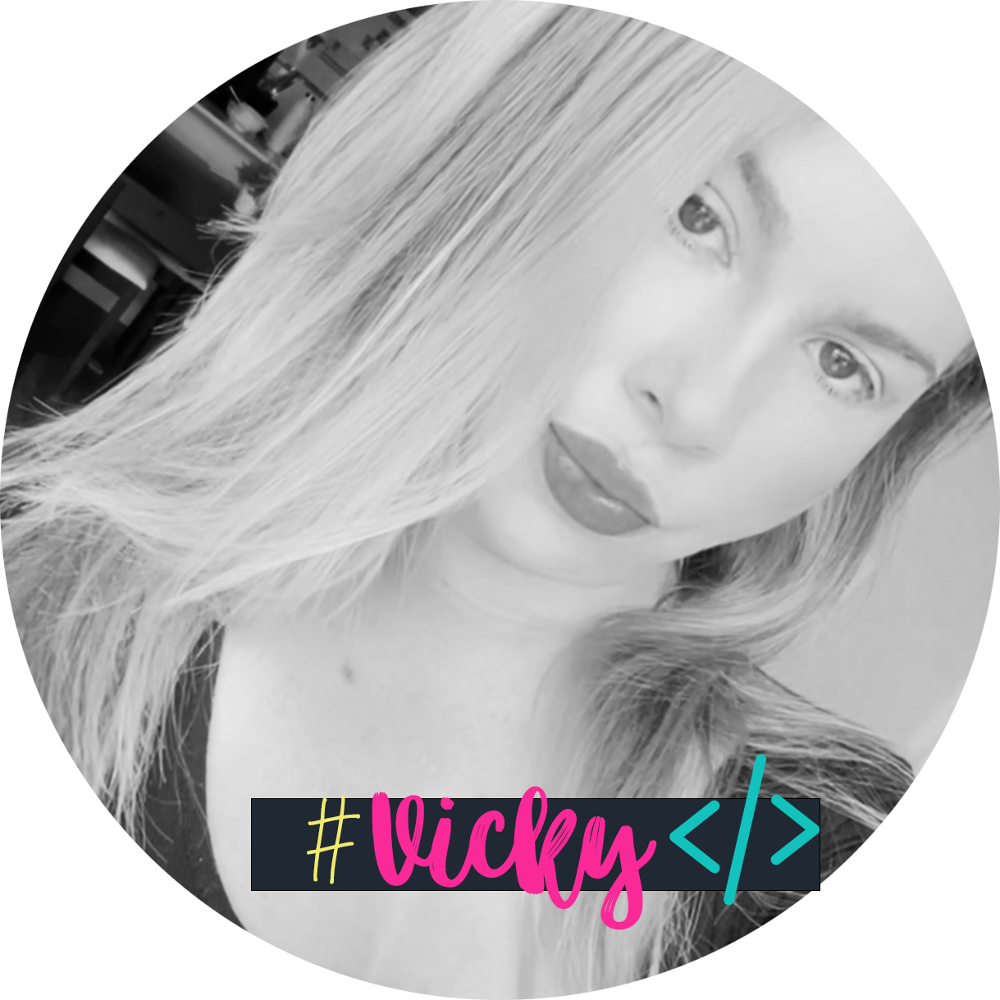
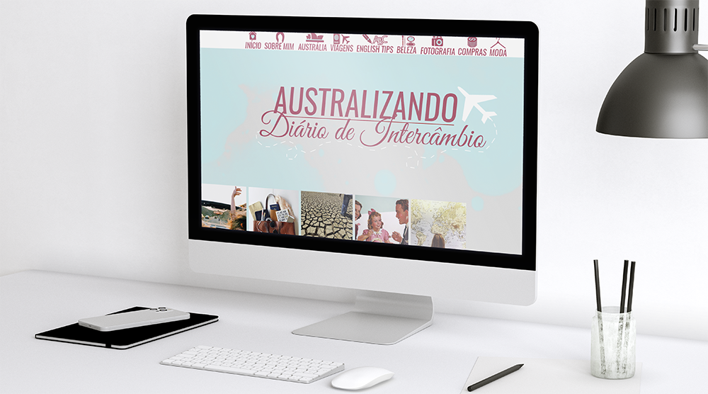
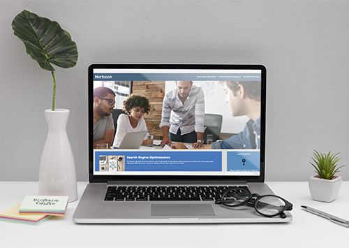

I am Victoria but everyone calls me Vicky. Nice to meet you! I am Brazilian and have been living in Australia for almost 7 years now.
I am extremely passionate about design and arts in general. I have been coding and designing layouts since little but have never studied,
hence why I am now enrolled to this course! Please feel free to have a look in my previous work.
MY PROJECTS
AUSTRALIZANDO

The Australizando project was designed from scratch along with a pre-made template HTML/CSS from Blogspot.com. The idea behind the interactive menu was to make the navigation more appealing to their viewers while making the layout prettier with some icons in the heading section. The colours for the visual identity was created knowing the main key for this project was to create a design which represents a trip overseas to Australia.
HORISEON

For this project our main aim was to make the Horiseon website more accessible to their users while maintaining the original code. In another words, we have tied up the website, corrected some bugs in the header that were not allowing us to navigate around the articles. We have also added ALT in all the images to make sure to included users that might be visually impaired and have grouped when was possible similar elements in the CSS to make the code cleaner and tidy.